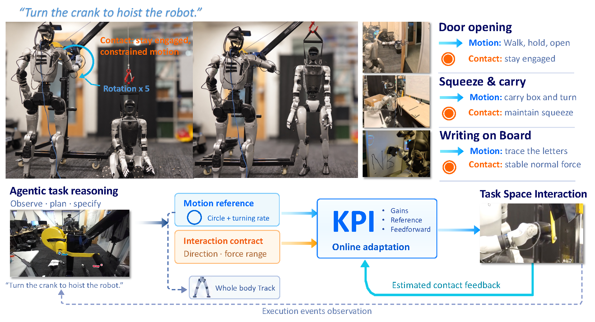

Under review. This page is anonymous.

Humanoids now walk, balance and reach with remarkable generality: one whole-body tracking policy follows references from a human, or from an end-to-end policy. That generality travels in the trajectory, and a trajectory alone carries limited information about the interaction it should produce: at contact, the executing controller determines how the robot behaves. Single-task policies usually reach hard interactions by optimising trajectory and controller together in simulation; general stacks usually assume a preset or hand-chosen controller. We present KPI, a promptable kernel for physical interaction between the trajectory source and an unmodified whole-body tracker. Instead of a controller fixed before the task, the trajectory source sends a contract: per direction, track, comply, or hold a force range in newtons. From tracking error and a wrench estimate, the kernel adapts the arms' stiffness, damping, reference and feedforward toward it at contact rate. We demonstrate KPI through an agentic framework: from one instruction, a vision-language agent writes both the reference trajectory and the contract, with no task-specific code. We demonstrate instruction-driven winch operation, door opening, box transport, and surface interaction. In the winch demonstration, the humanoid is able to turn a crank to hoist a second robot fully off the ground.
Each run starts from a single instruction, with no task-specific code and no hand-written contract.
The robot turns the crank until a second humanoid is lifted off the ground.
Grasp the handle, unlatch, step back, swing the door open and walk through.
Bimanual pick-up, turn, squat and place, holding the grasp as the body moves.
Sustained contact force between the pen and the board during tangential motion.
A translational motion constraint.
Bimanual support maintained through posture changes and locomotion.